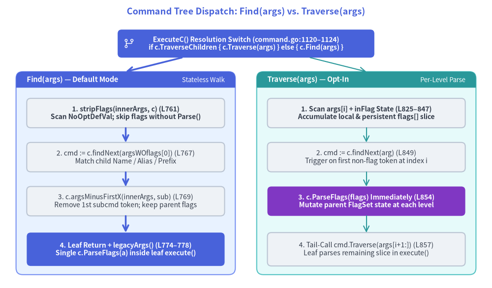
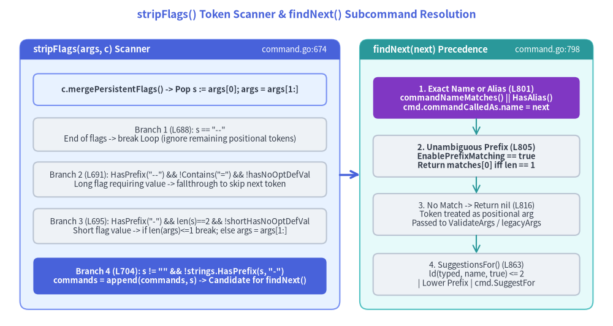

Command Resolution & Flag Stripping Parser (Find, Traverse, and stripFlags)
Before Cobra can execute a command's lifecycle hooks or validate its flags, it must resolve which *Command node in the tree owns the invocation. Unlike simple CLI routers that assume os.Args[1] is always a subcommand name, POSIX/GNU CLIs allow root persistent flags (along with space-separated flag values) to appear before, between, or after subcommand tokens—for example: app --config prod.yaml -v server --port 8080 start.

Source Code
from drawlib.canvas import save, setup
from drawlib.icons import phosphor
from drawlib.lines import line
from drawlib.shapes import rectangle
from drawlib.smartarts import Panel
from drawlib.styles import Styles
from drawlib.text import text
setup(width=184, height=108)
text(
(92, 103.5),
"Command Tree Dispatch: Find(args) vs. Traverse(args)",
style=Styles.PrimaryBold.patch(text_size=13.0),
)
# Top Dispatch Router
rectangle(
(92, 91.5),
width=96,
height=10.5,
style=Styles.PrimaryFlat.patch(shape_r=1.5),
text="ExecuteC() Resolution Switch (command.go:1120–1124)\nif c.TraverseChildren { c.Traverse(args) } else { c.Find(args) }",
text_style=Styles.WhiteBold.patch(text_size=10.0),
)
phosphor.git_branch((48, 91.5), width=4.6, style=Styles.White)
# Left Panel: Find(args) Default Mode
Panel(
"Find(args) — Default Mode",
"Stateless Walk",
style=Styles.PrimaryNeutral,
header_style=Styles.PrimaryFlat,
text_style=Styles.WhiteBold.patch(text_size=10.5),
description_style=Styles.White.patch(text_size=9.5),
header_height=6.0,
).draw((6, 5), width=82, height=76)
rectangle(
(47, 65.5),
width=74,
height=11,
style=Styles.Neutral.patch(shape_r=1.5),
text="1. stripFlags(innerArgs, c) (L761)\nScan NoOptDefVal; skip flags without Parse()",
text_style=Styles.DarkBold.patch(text_size=10.0),
)
rectangle(
(47, 49.0),
width=74,
height=11,
style=Styles.Neutral.patch(shape_r=1.5),
text="2. cmd := c.findNext(argsWOflags[0]) (L767)\nMatch child Name / Alias / Prefix",
text_style=Styles.Dark.patch(text_size=10.0),
)
rectangle(
(47, 32.5),
width=74,
height=11,
style=Styles.Neutral.patch(shape_r=1.5),
text="3. c.argsMinusFirstX(innerArgs, sub) (L769)\nRemove 1st subcmd token; keep parent flags",
text_style=Styles.Dark.patch(text_size=10.0),
)
rectangle(
(47, 14.5),
width=74,
height=12.5,
style=Styles.PrimaryFlat.patch(shape_r=1.5),
text="4. Leaf Return + legacyArgs() (L774–778)\nSingle c.ParseFlags(a) inside leaf execute()",
text_style=Styles.WhiteBold.patch(text_size=10.0),
)
line((47, 60.0), (47, 54.5), arrow_head="->", style=Styles.PrimaryBold)
line((47, 43.5), (47, 38.0), arrow_head="->", style=Styles.PrimaryBold)
line((47, 27.0), (47, 20.75), arrow_head="->", style=Styles.PrimaryBold)
# Right Panel: Traverse(args) Mode
Panel(
"Traverse(args) — Opt-In",
"Per-Level Parse",
style=Styles.SecondaryNeutral,
header_style=Styles.SecondaryFlat,
text_style=Styles.WhiteBold.patch(text_size=10.5),
description_style=Styles.White.patch(text_size=9.5),
header_height=6.0,
).draw((96, 5), width=82, height=76)
rectangle(
(137, 65.5),
width=74,
height=11,
style=Styles.Neutral.patch(shape_r=1.5),
text="1. Scan args[i] + inFlag State (L825–847)\nAccumulate local & persistent flags[] slice",
text_style=Styles.DarkBold.patch(text_size=10.0),
)
rectangle(
(137, 49.0),
width=74,
height=11,
style=Styles.Neutral.patch(shape_r=1.5),
text="2. cmd := c.findNext(arg) (L849)\nTrigger on first non-flag token at index i",
text_style=Styles.Dark.patch(text_size=10.0),
)
rectangle(
(137, 32.5),
width=74,
height=11,
style=Styles.AccentFlat.patch(shape_r=1.5),
text="3. c.ParseFlags(flags) Immediately (L854)\nMutate parent FlagSet state at each level",
text_style=Styles.WhiteBold.patch(text_size=10.0),
)
rectangle(
(137, 14.5),
width=74,
height=12.5,
style=Styles.Neutral.patch(shape_r=1.5),
text="4. Tail-Call cmd.Traverse(args[i+1:]) (L857)\nLeaf parses remaining slice in execute()",
text_style=Styles.Dark.patch(text_size=10.0),
)
line((137, 60.0), (137, 54.5), arrow_head="->", style=Styles.Secondary)
line((137, 43.5), (137, 38.0), arrow_head="->", style=Styles.Secondary)
line((137, 27.0), (137, 20.75), arrow_head="->", style=Styles.Secondary)
# Top Router to Left & Right Panels
line((68, 86.25), (47, 81.0), arrow_head="->", style=Styles.PrimaryBold)
line((116, 86.25), (137, 81.0), arrow_head="->", style=Styles.Secondary)
save()
1. Two Resolution Strategies: Find vs. Traverse
In ExecuteC() (command.go:1120–1124), Cobra selects between two command-tree walkers based on the root command's TraverseChildren boolean field (command.go:230):
var flags []string
if c.TraverseChildren {
cmd, flags, err = c.Traverse(args)
} else {
cmd, flags, err = c.Find(args)
}
1.1 Find(args []string) — Stateless Descent (command.go:757–779)
By default (TraverseChildren == false), Cobra resolves the target leaf command without calling ParseFlags on intermediate parent commands. Instead, Find uses a recursive closure innerfind (command.go:760–772) that strips flags on the fly to locate subcommand names while preserving all flag tokens in innerArgs so the leaf command can parse them in a single pass:
func (c *Command) Find(args []string) (*Command, []string, error) {
var innerfind func(*Command, []string) (*Command, []string)
innerfind = func(c *Command, innerArgs []string) (*Command, []string) {
argsWOflags := stripFlags(innerArgs, c)
if len(argsWOflags) == 0 {
return c, innerArgs
}
nextSubCmd := argsWOflags[0]
cmd := c.findNext(nextSubCmd)
if cmd != nil {
return innerfind(cmd, c.argsMinusFirstX(innerArgs, nextSubCmd))
}
return c, innerArgs
}
commandFound, a := innerfind(c, args)
if commandFound.Args == nil {
return commandFound, a, legacyArgs(commandFound, stripFlags(a, commandFound))
}
return commandFound, a, nil
}
Key architectural invariants of Find:
- Zero
FlagSet.ParseSide Effects During Walk:stripFlags(innerArgs, c)callsc.mergePersistentFlags()(command.go:678) soc.Flags()knows all inherited persistent flag definitions, but it never mutates flag values. - Surgical Token Removal via
argsMinusFirstX: Whenc.findNext(nextSubCmd)matches a child commandcmd,innerfindpassesc.argsMinusFirstX(innerArgs, nextSubCmd)to the child. Any persistent flags passed beforenextSubCmd(e.g.,root --kubeconfig ~/.kube/config get pods) remain insideinnerArgsand are handed down toget, whereget.execute(flags)parses bothroot's inherited persistent flags andget's local flags together (command.go:919). - Why Non-Persistent Parent Flags Fail Under
Find: BecauseFindleaves parent flags in the slice passed to the child, any local (non-persistent) flag defined only on a parent command will trigger anunknown flagerror when the child callsc.ParseFlags(a). - Fallback
legacyArgsCheck (command.go:775–777,args.go:28–39): If the resolvedcommandFoundhasArgs == nil,Findimmediately runslegacyArgs(commandFound, stripFlags(a, commandFound)). IfcommandFoundis the root command (!cmd.HasParent()), has subcommands (cmd.HasSubCommands()), and still has unconsumed non-flag arguments (len(args) > 0),legacyArgsreturns:fmt.Errorf("unknown command %q for %q%s", args[0], cmd.CommandPath(), cmd.findSuggestions(args[0]))
1.2 Traverse(args []string) — Incremental Per-Level Parsing (command.go:821–860)
When a CLI requires parent commands to accept local (non-persistent) flags on the same command line as a subcommand (e.g., docker --tls -D container ls -a), setting TraverseChildren: true on the root command switches dispatch to Traverse:
func (c *Command) Traverse(args []string) (*Command, []string, error) {
flags := []string{}
inFlag := false
for i, arg := range args {
switch {
// A long flag with a space separated value
case strings.HasPrefix(arg, "--") && !strings.Contains(arg, "="):
// TODO: this isn't quite right, we should really check ahead for 'true' or 'false'
inFlag = !hasNoOptDefVal(arg[2:], c.Flags())
flags = append(flags, arg)
continue
// A short flag with a space separated value
case strings.HasPrefix(arg, "-") && !strings.Contains(arg, "=") && len(arg) == 2 && !shortHasNoOptDefVal(arg[1:], c.Flags()):
inFlag = true
flags = append(flags, arg)
continue
// The value for a flag
case inFlag:
inFlag = false
flags = append(flags, arg)
continue
// A flag without a value, or with an `=` separated value
case isFlagArg(arg):
flags = append(flags, arg)
continue
}
cmd := c.findNext(arg)
if cmd == nil {
return c, args, nil
}
if err := c.ParseFlags(flags); err != nil {
return nil, args, err
}
return cmd.Traverse(args[i+1:])
}
return c, args, nil
}
1.3 Architectural Comparison: Find vs. Traverse
| Dimension | Find(args []string) (command.go:757–779) |
Traverse(args []string) (command.go:821–860) |
|---|---|---|
| Activation Condition | Default (c.TraverseChildren == false) |
Opt-in (c.TraverseChildren == true) |
| Parent Local Flags | Rejected by child's ParseFlags unless declared on PersistentFlags() |
Supported; parsed at each parent level via c.ParseFlags(flags) (L854) |
ParseFlags Invocations |
Once, inside the resolved leaf's c.execute(flags) (L919) |
Once per ancestor level (L854) + once on leaf (L919) |
| Flag Slicing Strategy | c.argsMinusFirstX(innerArgs, nextSubCmd) removes only the subcommand name |
Slices tail args[i+1:] (L857), consuming args[:i+1] at parent c |
| Early Unknown-Subcommand Error | Runs legacyArgs() inside Find() (L776) if commandFound.Args == nil |
Defers argument validation to c.ValidateArgs(argWoFlags) (L968) |
-- Terminator Handling |
Explicit case s == "--": break Loop in both stripFlags (L688) and argsMinusFirstX (L726) |
Falls through switch (isFlagArg("--") is false at L750) into c.findNext("--") -> nil -> returns c, args, nil |
2. Token Scanning Internals: stripFlags, NoOptDefVal, and argsMinusFirstX
The central parsing challenge in stripFlags (command.go:674–710) and argsMinusFirstX (command.go:715–748) is distinguishing a flag's space-separated value from a subcommand name without executing full pflag value parsing.
For example, given cmd -f admin vs. cmd -v admin:
- If
-fis a--file stringflag,adminis the filename argument to-f, not theadminsubcommand. - If
-vis a--verbose boolflag,-vtakes no space-separated value, soadminis theadminsubcommand.

Source Code
from drawlib.canvas import save, setup
from drawlib.lines import line
from drawlib.shapes import rectangle
from drawlib.smartarts import Panel
from drawlib.styles import Styles
from drawlib.text import text
setup(width=184, height=98)
text(
(92, 93.5),
"stripFlags() Token Scanner & findNext() Subcommand Resolution",
style=Styles.PrimaryBold.patch(text_size=12.5),
)
# Left Panel: stripFlags() Token Scanner
Panel(
"stripFlags(args, c) Scanner",
"command.go:674",
style=Styles.PrimaryNeutral,
header_style=Styles.PrimaryFlat,
text_style=Styles.WhiteBold.patch(text_size=10.5),
description_style=Styles.White.patch(text_size=9.5),
header_height=6.0,
).draw((6, 5), width=96, height=81)
rectangle(
(54, 71.0),
width=88,
height=9.5,
style=Styles.PrimaryNeutral.patch(shape_r=1.5),
text="c.mergePersistentFlags() -> Pop s := args[0]; args = args[1:]",
text_style=Styles.DarkBold.patch(text_size=9.5),
)
rectangle(
(54, 57.5),
width=88,
height=10.0,
style=Styles.Neutral.patch(shape_r=1.5),
text="Branch 1 (L688): s == \"--\"\nEnd of flags -> break Loop (ignore remaining positional tokens)",
text_style=Styles.Dark.patch(text_size=9.5),
)
rectangle(
(54, 44.0),
width=88,
height=10.5,
style=Styles.Neutral.patch(shape_r=1.5),
text="Branch 2 (L691): HasPrefix(\"--\") && !Contains(\"=\") && !hasNoOptDefVal\nLong flag requiring value -> fallthrough to skip next token",
text_style=Styles.Dark.patch(text_size=9.5),
)
rectangle(
(54, 30.0),
width=88,
height=10.5,
style=Styles.Neutral.patch(shape_r=1.5),
text="Branch 3 (L695): HasPrefix(\"-\") && len(s)==2 && !shortHasNoOptDefVal\nShort flag value -> if len(args)<=1 break; else args = args[1:]",
text_style=Styles.Dark.patch(text_size=9.5),
)
rectangle(
(54, 15.0),
width=88,
height=11.0,
style=Styles.PrimaryFlat.patch(shape_r=1.5),
text="Branch 4 (L704): s != \"\" && !strings.HasPrefix(s, \"-\")\ncommands = append(commands, s) -> Candidate for findNext()",
text_style=Styles.WhiteBold.patch(text_size=9.5),
)
# Right Panel: findNext() & SuggestionsFor()
Panel(
"findNext(next) Precedence",
"command.go:798",
style=Styles.SecondaryNeutral,
header_style=Styles.SecondaryFlat,
text_style=Styles.WhiteBold.patch(text_size=10.5),
description_style=Styles.White.patch(text_size=9.5),
header_height=6.0,
).draw((108, 5), width=70, height=81)
rectangle(
(143, 68.5),
width=62,
height=12.5,
style=Styles.AccentFlat.patch(shape_r=1.5),
text="1. Exact Name or Alias (L801)\ncommandNameMatches() || HasAlias()\ncmd.commandCalledAs.name = next",
text_style=Styles.WhiteBold.patch(text_size=9.5),
)
rectangle(
(143, 51.0),
width=62,
height=12.5,
style=Styles.Neutral.patch(shape_r=1.5),
text="2. Unambiguous Prefix (L805)\nEnablePrefixMatching == true\nReturn matches[0] iff len == 1",
text_style=Styles.DarkBold.patch(text_size=9.5),
)
rectangle(
(143, 33.5),
width=62,
height=12.5,
style=Styles.Neutral.patch(shape_r=1.5),
text="3. No Match -> Return nil (L816)\nToken treated as positional arg\nPassed to ValidateArgs / legacyArgs",
text_style=Styles.Dark.patch(text_size=9.5),
)
rectangle(
(143, 15.5),
width=62,
height=12.5,
style=Styles.Neutral.patch(shape_r=1.5),
text="4. SuggestionsFor() (L863)\nld(typed, name, true) <= 2\n| Lower Prefix | cmd.SuggestFor",
text_style=Styles.Dark.patch(text_size=9.5),
)
line((143, 62.25), (143, 57.25), arrow_head="->", style=Styles.Secondary)
line((143, 44.75), (143, 39.75), arrow_head="->", style=Styles.Secondary)
line((143, 27.25), (143, 21.75), arrow_head="->", style=Styles.Secondary)
# Cross-panel handoff arrow
line((102, 45.5), (108, 45.5), arrow_head="->", style=Styles.PrimaryBold)
save()
2.1 hasNoOptDefVal and shortHasNoOptDefVal (command.go:654–672)
In github.com/spf13/pflag, every *flag.Flag struct carries a NoOptDefVal string field. When a flag is registered as a boolean (Bool / BoolP) or counter (Count / CountP), pflag sets flag.NoOptDefVal = "true" (or "+1"), indicating that passing the flag without =value supplies a default value and does not consume the next CLI token.
Cobra inspects this field directly via two helper functions (command.go:654–672):
func hasNoOptDefVal(name string, fs *flag.FlagSet) bool {
flag := fs.Lookup(name)
if flag == nil {
return false
}
return flag.NoOptDefVal != ""
}
func shortHasNoOptDefVal(name string, fs *flag.FlagSet) bool {
if len(name) == 0 {
return false
}
flag := fs.ShorthandLookup(name[:1])
if flag == nil {
return false
}
return flag.NoOptDefVal != ""
}
[!IMPORTANT] Unregistered Flag Behavior: If
fs.Lookup(name)orfs.ShorthandLookup(name[:1])returnsnil(for instance, an unknown flag or a child-local flag not yet visible on the parent), both functions returnfalse. Consequently,stripFlagsconservatively assumes an unknown--flagor-f(without=) consumes the following token as its value.
2.2 The 4-Way Switch in stripFlags (command.go:674–710)
stripFlags(args []string, c *Command) []string first calls c.mergePersistentFlags() (L678) so inherited persistent flags are present in flags := c.Flags() (L681), then loops over args:
Switch Case in stripFlags (command.go:687–706) |
Condition Checked | Scanner Action | Example Token Sequence |
|---|---|---|---|
1. Double-Dash Terminator (L688) |
s == "--" |
break Loop immediately; tokens after -- are positional arguments, never subcommands |
app -- server -> commands = [] (server is positional arg to app) |
2. Space-Valued Long Flag (L691) |
strings.HasPrefix(s, "--") && !strings.Contains(s, "=") && !hasNoOptDefVal(s[2:], flags) |
fallthrough to Case 3 to consume the next element (args = args[1:]) as the flag's value |
app --config prod.yaml run -> skips --config and prod.yaml, collects ["run"] |
3. Space-Valued Short Flag (L695) |
strings.HasPrefix(s, "-") && !strings.Contains(s, "=") && len(s) == 2 && !shortHasNoOptDefVal(s[1:], flags) |
If len(args) <= 1, break Loop; otherwise args = args[1:]; continue |
app -c prod.yaml run -> skips -c and prod.yaml, collects ["run"] |
4. Non-Flag Token (L704) |
s != "" && !strings.HasPrefix(s, "-") |
commands = append(commands, s) |
app -v --port=8080 run -> -v (NoOptDefVal="true") and --port=8080 (Contains("=")) are ignored; collects ["run"] |
[!NOTE] Stacked Short Flags (
len(s) > 2): Notice that Case 3 checkslen(s) == 2. When a user groups short flags or attaches a short flag's value without a space (e.g.,-vvvor-fconfig.yamlwherelen(s) > 2), the token starts with"-"so it is ignored by Case 4, and becauselen(s) != 2it does not consume the following token in Case 3.
2.3 Why argsMinusFirstX Removes Only the First Non-Flag Match (command.go:715–748)
When Find descends from parent c into child cmd = c.findNext(nextSubCmd), it must strip nextSubCmd from innerArgs before recursing (command.go:769). A naive filter that removes every occurrence of nextSubCmd—or removes the first string equal to nextSubCmd without checking flags—would corrupt real-world CLI invocations:
- Duplicate Positional Arguments (
command.go:712–713): Inopenshift admin policy add-role-to-user admin my-user, the token"admin"appears twice: first atargs[0]as the subcommand name, and again atargs[3]as the RBAC role name to grant tomy-user.argsMinusFirstXreturns immediately after excising the first non-flag occurrence (L740–743):if s == x { ret := make([]string, 0, len(args)-1) ret = append(ret, args[:pos]...) ret = append(ret, args[pos+1:]...) return ret } - Flag Value Collision Protection (
command.go:729–735): Inapp --user admin admin status, the first"admin"is the value of--user, while the second"admin"is the subcommand. BecauseargsMinusFirstXruns the identical!hasNoOptDefVal/!shortHasNoOptDefValchecks and executespos++(L734) to step over space-separated flag values, it skips the--user adminpair and removes only the subcommand"admin"at index2. - Respecting
--(command.go:726–728): Ifs == "--",argsMinusFirstXbreaks out ofLoopwithout removing anything after--.
3. Subcommand Matching Precedence & Typo Suggestions
3.1 findNext(next string) Matching Order (command.go:798–817)
Both Find (L767) and Traverse (L849) call c.findNext(next) to resolve a candidate token against c.commands:
func (c *Command) findNext(next string) *Command {
matches := make([]*Command, 0)
for _, cmd := range c.commands {
if commandNameMatches(cmd.Name(), next) || cmd.HasAlias(next) {
cmd.commandCalledAs.name = next
return cmd
}
if EnablePrefixMatching && cmd.hasNameOrAliasPrefix(next) {
matches = append(matches, cmd)
}
}
if len(matches) == 1 {
return matches[0] // #nosec G602
}
return nil
}
The resolution rules follow a strict two-pass priority within a single loop:
- Priority 1 — Exact Name or Alias Match (
L801–804):commandNameMatches(cmd.Name(), next)(command.go:1928–1934) checksstrings.EqualFold(s, t)if the package-levelcobra.EnableCaseInsensitivevariable (cobra.go:62, defaultfalse) is enabled, ors == totherwise.cmd.HasAlias(next)(command.go:1550–1558) iteratescmd.Aliasesusing the samecommandNameMatchescomparator.- When matched, Cobra records
cmd.commandCalledAs.name = next(later exposed viacmd.CalledAs()oncecmd.commandCalledAs.called = trueis set inExecuteCatL1137) and returnscmdimmediately.
- Priority 2 — Unambiguous Prefix Match (
L805–814):- Controlled by the global opt-in
cobra.EnablePrefixMatching(cobra.go:55, defaultfalse). cmd.hasNameOrAliasPrefix(next)(command.go:1571–1583) checksstrings.HasPrefix(c.Name(), prefix)(settingc.commandCalledAs.name = c.Name()) orstrings.HasPrefix(alias, prefix)(settingc.commandCalledAs.name = alias).- Prefix matches are collected into
matches;findNextreturnsmatches[0]if and only iflen(matches) == 1. If two subcommands share the prefix (e.g.,statusandstartforst),len(matches) == 2, sofindNextreturnsnil.
- Controlled by the global opt-in
3.2 Levenshtein Distance (ld) and SuggestionsFor (command.go:781–796, 863–881, cobra.go:192–223)
When a user mistypes a subcommand on a command using legacyArgs (args.go:36) or OnlyValidArgs (args.go:61), Cobra invokes c.findSuggestions(arg) (command.go:781–796):
- If
c.DisableSuggestionsistrue, returns"". - If
c.SuggestionsMinimumDistance <= 0, initializesc.SuggestionsMinimumDistance = 2(L785–787). - Calls
c.SuggestionsFor(typedName)(command.go:863–881), which iterates over every childcmdwherecmd.IsAvailableCommand()istrue(!Deprecated && !Hidden && cmd != helpCommand && (Runnable || HasAvailableSubCommands)) and appendscmd.Name()if any of three conditions hold:- Levenshtein Edit Distance (
L867–868):ld(typedName, cmd.Name(), true) <= c.SuggestionsMinimumDistance. The helperld(s, t string, ignoreCase bool) int(cobra.go:192–223) allocates a 2D slicedof dimensions(len(s)+1) × (len(t)+1)and computes standard insertion/deletion/substitution edit distance in $O(|s| \cdot |t|)$ time. - Case-Insensitive Prefix (
L869):strings.HasPrefix(strings.ToLower(cmd.Name()), strings.ToLower(typedName)). - Explicit
SuggestForMapping (L873–877):strings.EqualFold(typedName, explicitSuggestion)for any string incmd.SuggestFor(allowing authors to suggestremovewhen a user typesdeleteorerase, even though their Levenshtein distance exceeds2).
- Levenshtein Edit Distance (